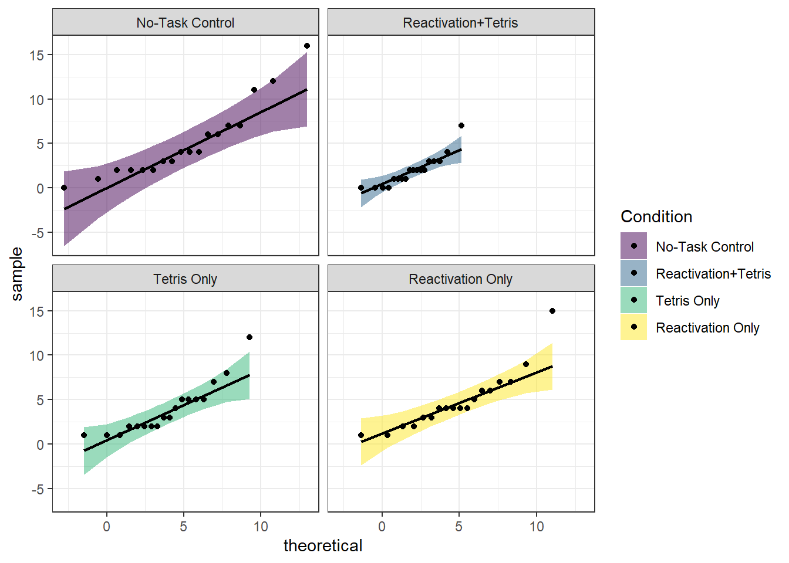

12 One-way ANOVA
Intended Learning Outcomes
By the end of this chapter you should be able to:
- Apply and interpret a one-way ANOVA.
- Break down the results of a one-way ANOVA using post-hocs tests and apply a correction for multiple comparisons.
- Conduct a power analysis for a one-way ANOVA.
Individual Walkthrough
12.1 Activity 1: Setup & download the data
This week, we will be working with a new dataset. Follow the steps below to set up your project:
- Create a new project and name it something meaningful (e.g., “2B_chapter12”, or “12_anova”). See Section 1.2 if you need some guidance.
- Create a new
.Rmdfile and save it to your project folder. See Section 1.3 if you need help. - Delete everything after the setup code chunk (e.g., line 12 and below)
- Download the new dataset here: data_ch12.zip. The zip folder includes:
- the data file for Experiment 2 (
James_2015_Expt_2.csv), and the - the codebook for Experiment 2 (
James Holmes Experiment 2 Data Code Book.doc).
- the data file for Experiment 2 (
- Extract the data file from the zip folder and place it in your project folder. If you need help, see Section 1.4.
Citation
James, E. L., Bonsall, M. B., Hoppitt, L., Tunbridge, E. M., Geddes, J. R., Milton, A. L., & Holmes, E. A. (2015). Computer Game Play Reduces Intrusive Memories of Experimental Trauma via Reconsolidation-Update Mechanisms. Psychological Science, 26(8), 1201-1215. https://doi.org/10.1177/0956797615583071
Abstract
Memory of a traumatic event becomes consolidated within hours. Intrusive memories can then flash back repeatedly into the mind’s eye and cause distress. We investigated whether reconsolidation—the process during which memories become malleable when recalled—can be blocked using a cognitive task and whether such an approach can reduce these unbidden intrusions. We predicted that reconsolidation of a reactivated visual memory of experimental trauma could be disrupted by engaging in a visuospatial task that would compete for visual working memory resources. We showed that intrusive memories were virtually abolished by playing the computer game Tetris following a memory-reactivation task 24 hr after initial exposure to experimental trauma. Furthermore, both memory reactivation and playing Tetris were required to reduce subsequent intrusions (Experiment 2), consistent with reconsolidation-update mechanisms. A simple, noninvasive cognitive-task procedure administered after emotional memory has already consolidated (i.e., > 24 hours after exposure to experimental trauma) may prevent the recurrence of intrusive memories of those emotional events.
The data is available on OSF: https://osf.io/ij7ea/
Changes made to the dataset
- The original SPSS file was converted to CSV format. This time, we downloaded the numeric version of the data, allowing you to practice recoding values.
- Missing values were coded as 9999.000 in the original data file; however, we replaced them with
NA.
12.2 Activity 2: Load in the library, read in the data, and familiarise yourself with the data
Today, we will use several packages: effectsize, rstatix, tidyverse, qqplotr, car, emmeans, and pwr, and, of course, the dataset James_2015_Expt_2.csv. The order in which the packages are loaded matters today. I believe we have used all of these packages before, but if you need help installing them, see Section 1.5.1 for more details.
As always, take a moment to familiarise yourself with the data before starting your analysis.
Once you have explored the data objects and the codebook, try answering the following questions:
- How many conditions were included in the experiment?
- How many participants were allocated to each condition?
- How many of participants were allowed to play Tetris during the experiment?
- How many visual analogue mood scales did participants complete before the experiment?
- Name one of them: (Hint: Match the spelling exactly.)
- Name the column that stores the main outcome variable: (Hint: You can find the information in the codebook.)
12.3 Activity 3: Preparing the dataframe
Let’s start by wrangling the data we need for today’s analysis:
- Convert the
Conditioncolumn into a factor and replace its values with descriptive labels. - Add a column called
Participant_ID. This requires using a new functionrow_number()withinmutate(). - Rename
Days_One_to_Seven_Image_Based_Intrusions_in_Intrusion_DiarytoIntrusions. - Select only the columns
Participant_ID,Condition, andIntrusions - Store the cleaned dataset as
james_data.
12.4 Activity 4: Compute descriptives
Now, we can calculate the means and standard deviations for each experimental group.
12.5 Activity 5: Create an appropriate plot
Now, let’s visualise the data. The original paper uses a bar plot, but we’ll create a more informative plot instead.
- Generate a violin-boxplot with the number of intrusive memories on the y-axis and experimental group on the x-axis.
- Rename the y-axis title to Number of Intrusions.
- Feel free to add any additional layers in your own time.
12.6 Activity 6: Store the ANOVA model and check assumptions
12.6.1 The ANOVA model
Before testing assumptions, we first need to store the ANOVA model.
For designs with equal group sizes, we could use the aov() function from the stats package, which is part of Base R. The formula for aov() is:
However, there is a catch. aov only supports between-subjects designs. Additionally, it assumes balanced designs (i.e., equal sample sizes in each group; Type I sum of squares). It should not be used for unbalanced designs where group sizes differ.
In our current design, this is not a concern since we have equal sample sizes and no within-subject variable. However, you may encounter different designs in the future, so we recommend a more flexible approach.
Last week, we saw that the lm() function can handle categorical variables. We can apply it here.
The structure of lm() is identical to aov():
Let’s use this approach with our variables and store the model in a separate object called mod:
12.6.2 Assumption checks
Now that we have stored the model, we can proceed with the assumption checks. For a one-way independent ANOVA, the assumptions are the same as those for an independent t-test.
Assumption 1: Continuous DV
The dependent variable must be measured at interval or ratio level. We can confirm that by looking at Intrusions.
Assumption 2: Data are independent
There should be no relationship between the observations. Scores in one condition or observation should not influence scores in another. We assume this assumption holds for our data.
Assumption 3: The residuals of the DV should be normally distributed
Again, this assumption applies to each group.
There are several ways to test normality, and here we will use QQ plots from the qqplotr package.
ggplot(james_data, aes(sample = Intrusions, fill = Condition)) +
stat_qq_band(alpha = 0.5) +
stat_qq_line() +
stat_qq_point() +
facet_wrap(~Condition) +
theme_bw() +
scale_fill_viridis_d()
Overall, the assumption of normality appears to hold.
Assumption 4: Homoscedasticity (homogeneity of variance)
This assumption requires the variances across the four groups to be similar (i.e., homoscedasticity). If the variances differ significantly between groups, this is known as heteroscedasticity.
We can test this using Levene’s Test for Equality of Variance, available in the car package. The leveneTest() function takes the formula DV ~ IV and the data object as arguments. Here’s how to apply it:
| Df | F value | Pr(>F) | |
|---|---|---|---|
| group | 3 | 1.692984 | 0.1767091 |
| 68 | NA | NA |
The test output shows a p-value greater than .05, indicating that we do not have enough evidence to reject the null hypothesis. Therefore, we can assume that the variances across the four groups are equal.
If reporting Levene’s Test in a report, you would need to follow APA style: A Levene’s test of homogeneity of variances was conducted to compare the variances across the groups. The test indicated that the variances were homogeneous, \(F(3,67) = 1.69, p = .177\).
12.7 Activity 7: Compute a one-way ANOVA
We can compute the ANOVA output using the anova_test() function from the rstatix package. This function supports both model and formula input and allows additional arguments, such as specifying the type of ANOVA, calculating effect sizes, or manually defining within- or between-subject factors.
More information can be found on the rdocumentation support page
In this example, we will use anova_test() on the model mod. Since mod already contains the data and formula, we only need to specify a few additional arguments:
typespecifies the type of sums of squares for ANOVA. The default istype = 2, which produces identical results totype = 1when data are balanced, buttype = 2will additionally yield various assumption tests where appropriate.effect.sizespecifies the effect size. Here, we set it to “pes” (partial eta squared). Note that for one-way between-subjects designs, partial eta squared is equivalent to eta squared.
| Effect | DFn | DFd | F | p | p<.05 | pes |
|---|---|---|---|---|---|---|
| Condition | 3 | 68 | 3.795 | 0.014 | * | 0.143 |
Let’s explore alternative ways to use the anova_test() function. As you will see, these approaches produce exactly the same output as the one above.
If you prefer not to store the model separately, you can directly specify the formula and data within the anova_test() function:
If the formula approach isn’t for you, you can specify the arguments individually.
- data = The data object.
- dv = The dependent variable (DV; numeric).
- wid = The column name of the participant identifier (factor).
- between = The optional between-subjects factor variables.
- type = The type of sums of squares for ANOVA.
- effect.size = The effect size to compute and to show in the ANOVA results.
The output may be displayed slightly differently from what you saw in the lecture, but all the necessary numbers are there.
You can still use the anova_test() function as shown in Option 2. However, instead of the between argument, you would use the within argument to specify the within-subjects factor. The rest of the arguments remain the same as in Option 2.
Obviously, we cannot run this for a within-subjects design, as today’s dataset follows a between-subjects design.
12.8 Activity 8: Compute post-hoc tests and effect sizes
12.8.1 Post-hoc comparisons
So far, we know that the model is significant, meaning there are differences between groups. However, we do not yet know which groups differ from one another.
One approach would be to run independent Welch t-tests for each pairwise comparison between the four groups (1 vs 2, 1 vs 3, 1 vs 4, etc.). This would involve some data wrangling (e.g., filtering and dropping factor levels) which is quite time-consuming. Furthermore, we would need to apply corrections for multiple comparisons manually. (Even though, note that the original authors did not mention whether or not they corrected for multiple comparisons.)
A quicker and more efficient way to perform these comparisons is by using the emmeans() function from the emmeans package. This function computes all possible pairwise t-tests and automatically applies a correction for multiple comparisons to the p-values.
In this case, we will use the Bonferroni adjustment method.
$emmeans
Condition emmean SE df lower.CL upper.CL
No-Task Control 5.11 0.749 68 3.617 6.60
Reactivation+Tetris 1.89 0.749 68 0.395 3.38
Tetris Only 3.89 0.749 68 2.395 5.38
Reactivation Only 4.83 0.749 68 3.340 6.33
Confidence level used: 0.95
$contrasts
contrast estimate SE df t.ratio p.value
(No-Task Control) - (Reactivation+Tetris) 3.222 1.06 68 3.044 0.0199
(No-Task Control) - Tetris Only 1.222 1.06 68 1.155 1.0000
(No-Task Control) - Reactivation Only 0.278 1.06 68 0.262 1.0000
(Reactivation+Tetris) - Tetris Only -2.000 1.06 68 -1.889 0.3787
(Reactivation+Tetris) - Reactivation Only -2.944 1.06 68 -2.781 0.0420
Tetris Only - Reactivation Only -0.944 1.06 68 -0.892 1.0000
P value adjustment: bonferroni method for 6 tests The output consists of two tables:
The first one ($emmeans) displays the means, standard errors, degrees of freedom, and confidence intervals (referred to as Confidence Limits here).
The second ($contrasts) contains the pairwise comparisons between all groups. The
estimaterepresents the difference between groups,t.ratiois the t-value, andp.valueprovides the Bonferroni-corrected p-value. Note that there are no asterisks indicating significance - you will need to compare the p-values against the .05 cutoff manually.
12.8.2 Effect sizes for each comparison
To compute effect sizes, we can use the cohens_d function from the rstatix package.
| .y. | group1 | group2 | effsize | n1 | n2 | magnitude |
|---|---|---|---|---|---|---|
| Intrusions | No-Task Control | Reactivation+Tetris | 0.9964172 | 18 | 18 | large |
| Intrusions | No-Task Control | Tetris Only | 0.3376282 | 18 | 18 | small |
| Intrusions | No-Task Control | Reactivation Only | 0.0730015 | 18 | 18 | negligible |
| Intrusions | Reactivation+Tetris | Tetris Only | -0.8382366 | 18 | 18 | large |
| Intrusions | Reactivation+Tetris | Reactivation Only | -1.1076078 | 18 | 18 | large |
| Intrusions | Tetris Only | Reactivation Only | -0.3030234 | 18 | 18 | small |
12.9 Activity 9: Sensitivity power analysis
As always, we want to determine the smallest effect size that this study could detect, given its design and sample size.
To do this, we use the pwr.anova.test() function from the pwr package. The key arguments for this function are:
k= The number of groups.n= The number of participants in each group.sig.level= The significance level of the study (usually set to 0.05).power= The power level of the study (usually set to 0.8).
Since the power analysis computes Cohen’s f, but the model output provides partial eta squared, we need to convert the eta squared value into f to be able to compare the two. We can achieve this using the eta2_to_f() function from the effectsize package. The partial eta squared value from the model was 0.143.
The smallest effect size (Cohen’s \(f\)) that can be detected with four groups, 18 participants in each group, a significance level of 0.05, and 80% power was \(f = .40\). This was smaller than the effect size determined by the ANOVA (\(\eta_p^2 = 0.143; f = 0.41)\). Therefore, the study was sufficiently powered.
12.10 Activity 10: The write-up
A one-way between-subjects ANOVA was conducted on the 7-day diary post-intervention to examine the effect of cognitive task on overall intrusion scores. The analysis revealed a statistically significant effect, \(F(3, 68) = 3.79, p = .014, \eta_p^2 = 0.143\).
Since the ANOVA result was significant, post-hoc pairwise comparisons were conducted with Bonferroni corrections for multiple comparisons to identify which groups differed significantly.
Comparisons demonstrated that the reactivation-plus-Tetris group \((M = 1.89, SD = 1.75)\) experienced significantly fewer intrusive memories compared to the no-task control group \((M = 5.11, SD = 4.23)\), \(t(68) = 3.04, p_{adj} = .020, d = 1.00\). This effect is considered large.
Furthermore, the reactivation-plus-Tetris group \((M = 1.89, SD = 1.75)\) experienced significantly fewer intrusive memories compared to the reactivation-only group \((M = 4.83, SD = 3.33)\), \(t(68) = 2.78, p_{adj} = .042, d = 1.11\). This effect is also considered large.
There were no significant differences between the no-task control group and the Tetris-only group \((t(68) = 1.15, p_{adj} = 1, d = 0.34)\), the no-task control group and the reactivation-only group \((t(68) = 0.26, p_{adj} = 1, d = 0.07)\), the reactivation-plus-Tetris group and the Tetris-only group \((t(68) = 1.89, p_{adj} = .379, d = 0.84)\), or the Tetris-only group and the reactivation-only group \((t(68) = 0.89, p_{adj} = 1, d = 0.30)\).
Test your knowledge
Question 1
Why do we use a one-way ANOVA instead of multiple independent t-tests when comparing three or more groups?
Question 2
Which assumption must be met for an ANOVA to be valid?
Question 3
After finding a significant ANOVA result, which of the following statements about post-hoc tests is true?
Question 4
A researcher reports an effect size of ηₚ² = 0.02 after conducting a one-way ANOVA. How should this effect size be interpreted?